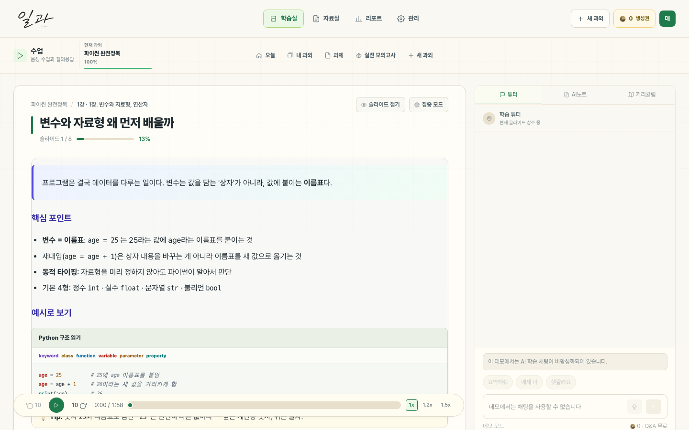
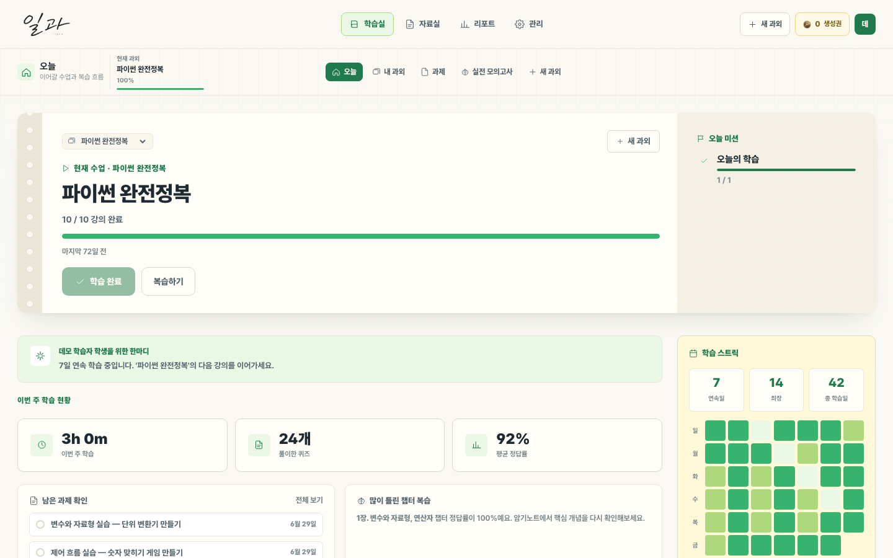
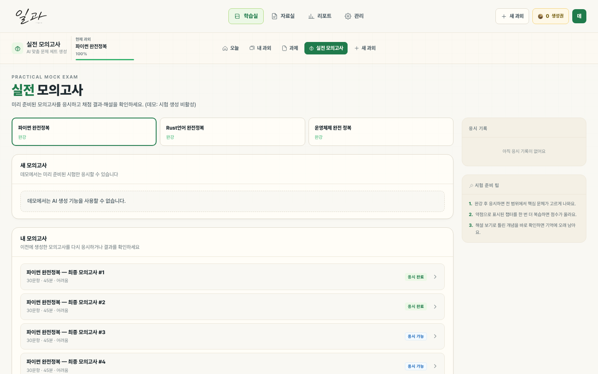
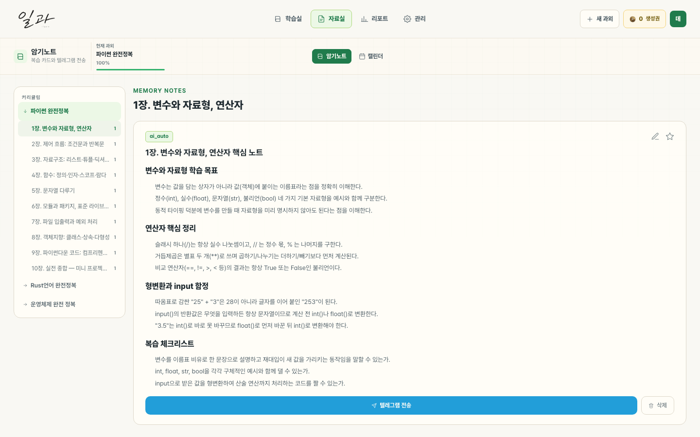
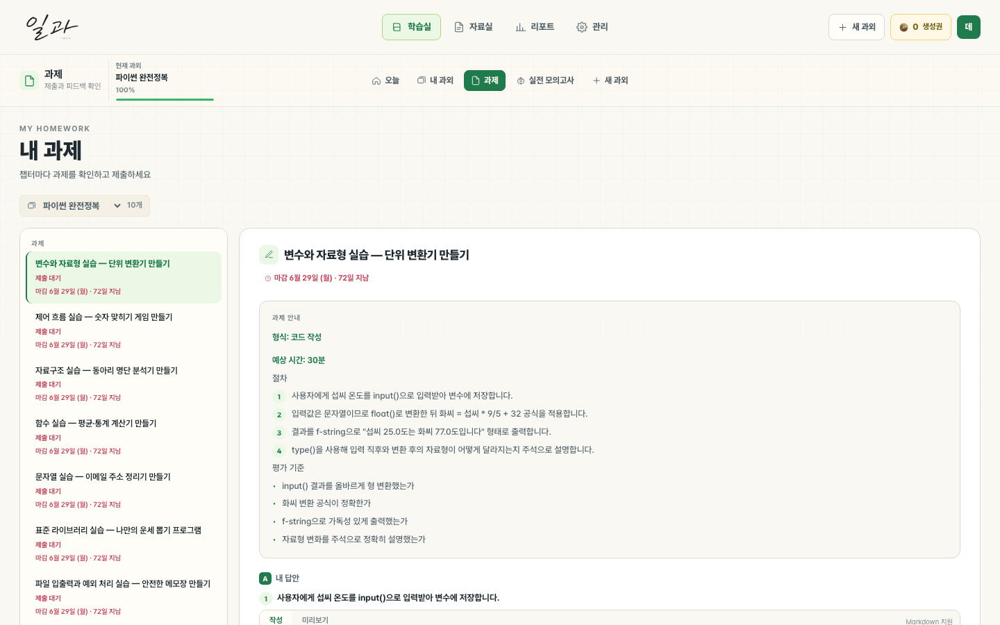

PORTFOLIO
AI 시스템 아키텍처와
FastAPI 파이프라인을 구축한
일과 · ilgwa
교재 PDF 기반 개인 맞춤형 AI 강의·수업 생성 플랫폼
PORTFOLIO
교재 PDF 기반 개인 맞춤형 AI 강의·수업 생성 플랫폼
GitHub algocean1204/SW-ilgwa
AI 백엔드 FastAPI, LangGraph, vLLM, Modal GPU B200, asyncpg
모델 서빙 Qwen3.6-27B Dense FP8, Qwen3-TTS, Qwen3-ASR
검색·보안 Qdrant, BGE-M3 (Dense+Sparse), Marker, MinerU, Shiki, nh3
AI 아키텍처 설계 & FastAPI 백엔드 파이프라인 전담 (기여도 100%)
지연 시간과 모델 호출 비용을 엔지니어링으로 통제하고, 프로덕션 수준의 안정적인 AI 파이프라인을 구축했습니다.
순차 생성을 vLLM 기반 동시 병렬 할당으로 전환했습니다.
모델의 토큰 생성 자율도로 인한 레이아웃 CSS 붕괴를 코드로 차단했습니다.
트랜잭션 코어와 수명주기가 다른 고부하 AI 파이프라인을 격리했습니다.
교재 PDF 입력 → 강의 · 슬라이드 · 음성 · 시험 · 노트
백엔드 분리 검증 및 사전 생성된 3과목(Python, Rust, OS)의 강의·음성·시험·노트·과제 렌더링 화면입니다.





Modal B200 GPU 환경에서 15슬라이드 1강(검증 및 음성 합성 포함) 생성 시간을 74% 단축했습니다.
문제
문제 상황
15장의 슬라이드, 퀴즈, 노트, 과제, TTS를 단일 흐름으로 순차 요청하여 1강당 462초가 소요되었습니다.
원인
영향
극심한 응답 지연으로 사용자의 연속 학습 흐름 단절.
해결
환경
아키텍처 개선
결과
동일 생성 범위 기준 462s → 120s로 74% 단축 (3.85배 개선).
측정 지표
| 항목 | 순차 생성 | vLLM 병렬 할당 | 엔지니어링 임팩트 |
|---|---|---|---|
| 15슬라이드 1강 (검증·음성 포함) | 462s | 120s | 74% 단축 (3.85배 개선) |
| GPU 인스턴스 기동 지연 | 12.4s (콜드) | 0.8s (사전 로드) | 93.5% 단축 (15.5배 가속) |
| 비용 효율성 (1,000명 기준) | All Sonnet ₩43.72M | 계층 라우팅 ₩36.75M | 월 ₩6.9M 절감 (26% 마진 확보) |
대량 양산 워크로드는 자체 서빙 Qwen3.6-27B로 전담하고, 장애 발생 시에만 클라우드 API로 자동 절체합니다.
전공 교재의 복잡한 수식과 다단 표 왜곡을 차단하고, 정확한 검색 문맥을 주입하는 하이브리드 파이프라인을 구축했습니다.
벤치마크 및 폐기
실측 결과 및 판정
CPU ONNX의 문자오류율(CER)은 48.8%, PaddleOCR-VL 단독은 페이지 CER 75.9%로 실측되어 배포 불가로 판정했습니다.
문제 원인
아키텍처 확정
모델 구성
파이프라인 흐름
LLM의 환각 스타일링으로 인한 레이아웃 붕괴를 코드로 통제하고, 브라우저 렌더링 환경을 완벽히 격리했습니다.
문제
문제 상황
모델에게 슬라이드 HTML/CSS 생성을 전적으로 위임하자 요청마다 폰트, 여백, 코드 블록 레이아웃이 뒤바뀌었습니다.
원인
토큰 생성 자율도로 인해 16종 디자인 템플릿의 CSS 규칙이 무시되고, 임의 인라인 스크립트 삽입 가능성이 발생했습니다.
영향
제품의 일관된 UI 제공 불가 및 잠재적 클라이언트 보안 취약점 노출.
해결
아키텍처 결정
JSON 스키마 제어 예시
{
"category": "code",
"title": "{{핵심_개념}}",
"narration": "{{설명_200~360자}}"
}
평가 문항 파이프라인
LangGraph StateGraph 기반으로 출제 계획 수립 후 문제·오답·해설을 생성하며, 교차 검증 실패 시 교정 루프를 수행하고 교정 불가 시 해당 문항만 선별 재생성합니다.
단일 GPU 장애 시에도 서비스 무중단을 보장하는 Fallback 회로와 비동기 음성 큐를 설계했습니다.
안정성 설계
단일 GPU 다운 시 서비스 중단 방지
단일 클라우드 GPU(Modal B200)에만 의존할 경우 일시적 장애나 할당 지연 시 서비스가 멈추는 문제를 방어했습니다.
엔지니어링 조치
상용 API는 장애 시 사용자에게 에러를 노출하지 않기 위한 비상 우회로로만 제한적으로 사용합니다.
음성 합성
아키텍처 분리
합성 품질 지표
화자 유사도 0.964~0.976 (기준 ≥ 0.85 달성), Round-trip CER 0.010~0.019 (91~95% 오류 개선), 튀지 않고 일정한 음성 톤 유지.
음성 질의 인식
Qwen3-ASR / mlx-whisper-turbo 기반 실시간 음성 질문 텍스트 변환 (RTF 0.075~0.260).
마이크로서비스 경계
수명주기, 장애 영향도, 대규모 비동기 I/O(`asyncio`)와 의존 라이브러리(PyTorch, vLLM)의 특성이 다른 AI 워크로드를 Spring 메인 스레드로부터 완전히 격리했습니다. 인증·결제·유저 상태 관리는 Spring이 전담합니다.
AI 파이프라인이 생성한 대용량 5대 산출물(슬라이드, 대본, 과제, 노트, 퀴즈)은 asyncpg를 통해 FastAPI에서 직접 DB에 저장하여 Spring 서버의 불필요한 직렬화/역직렬화 오버헤드를 차단했습니다.
상태 기반 그래프(StateGraph)를 통해 복잡한 조건부 분기와 선별 재시도 루프를 통제합니다.
슬라이드·퀴즈·노트·과제는 동시에 생성하고, 음성은 대본 완료 즉시 비동기 큐로 위임하여 파이프라인을 디커플링했습니다.
퀴즈
슬라이드 플랜 → 문항 생성 → 품질 보강 → 정답 위치 균등화 → 교차 검증 → 저장
노트
슬라이드 컨텍스트 → 핵심 요약 추출 → 마크다운 포매팅 → 저장
과제 & 채점
실습 과제 생성 → 저장. 채점은 Spring 제출 시 Claude/Gemini로 비동기 채점 후 결과 콜백
| 항목 | 이전 상태 (Baseline) | 최적화 결과 | 엔지니어링 임팩트 |
|---|---|---|---|
| 15슬라이드 1강 생성 (검증·음성 포함) | 순차 파이프라인 462s | vLLM 병렬 할당 120s | 74% 단축 (3.85배 개선) |
| GPU 인스턴스 기동 지연 | 초기 콜드스타트 12.4s | 메모리 사전 로드 0.8s | 93.5% 단축 (15.5배 가속) |
| 교재 OCR 문자오류율 (CER) | PaddleOCR 48.8% / VL 75.9% | 하이브리드 게이트 적용 0.222 | 98.6% 개선 (수식·표 보존율 100%) |
| LLM 서빙 월간 비용 (1,000명 기준) | All Sonnet ₩43.72M | 워크로드 계층 라우팅 ₩36.75M | 월 ₩6.9M 절감 (마진 26% 확보) |
| 음성 합성 품질 (Qwen3-TTS) | 베이스라인 CER 0.221 / 유사도 0.929 | 유사도 0.964~0.976 / CER 0.010 | std 0.0006의 결정론적 생성 |
데모 https://algocean1204.github.io/SW-ilgwa/ · 레포 https://github.com/algocean1204/SW-ilgwa